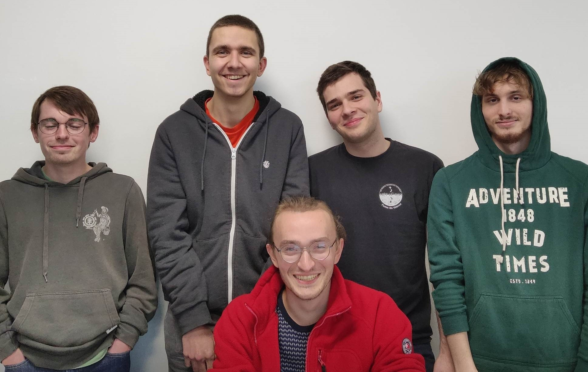
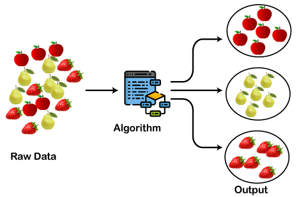

l'équipe

qui sommes-nous ?
Nous sommes un groupe de cinq étudiants en Master MIASHS, une formation spécialisée en mathématiques et informatique appliquées aux sciences humaines et sociales. Notre équipe est constituée de profils variés, incluant des étudiants en reprise d'études, des personnes en réorientation et d'autres poursuivant simplement leur cursus. Nous avons pour ambition de devenir des Data Scientists.
le projet
quel est notre objectif ? comment ça fonctionne ?
Au début de l'année, un projet nous a été assigné. L'objectif de ce projet est de concevoir une architecture capable de traiter un vaste ensemble de données d'images et de les regrouper. Nous avons utilisé des techniques de machine learning et d'autres outils étudiés en cours pour créer nos modèles.

applications potentielles

comment cela pourrait aider ?
Les applications potentielles de cet outil sont nombreuses et pourraient améliorer considérablement la vie de plusieurs personnes:
- Astronomie : Cet outil pourrait aider les astronomes à réaliser un premier tri des images selon les critères souhaités, leur permettant de gagner du temps pour les analyses.
- Agriculture : Des caméras pourraient capturer des photos des cultures et analyser régulièrement leur état pour déterminer si elles sont en bonne santé ou non.
- Art : Cet outil permettrait à quiconque d'étudier une peinture sans avoir besoin d'une connaissance approfondie de l'histoire de l'art ou même du nom de l'œuvre.